|
TE and TM Modes |

  
|
|
TE and TM Modes |
|
In a homogeneously filled waveguide, there exist two sets of distinct modes. One set of modes has no magnetic field component in the propagation direction, and are referred to as Transverse Magnetic, or TM, modes. The other set has no electric field component in the propagation direction, and are referred to as Transverse Electric, or TE, modes. In either case, one member of (3.8) vanishes, leaving only a single variable and a single equation. Correspondingly, equations (3.6) are simplified by the absence of one or the other field component.
In the TE case, we have 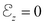, and the first of (3.8)
(3.9) 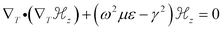
The boundary condition at an electrically conducting wall is 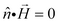. Through (3.6), this implies  ,which is the Natural boundary condition of (3.9).
,which is the Natural boundary condition of (3.9).
In the TM case, we have 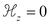, and the second of (3.8)
(3.10) 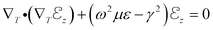.
The boundary condition at a metallic wall is 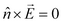, which requires that tangential components of 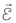 be zero in the wall. Since 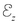 is always tangential to the wall, the boundary condition is the Dirichlet condition .
In the following example, we compute the first few TE modes of a waveguide of complex cross-section. The natural boundary condition allows an infinite number of solutions, differing only by a constant offset in the eigenfunction, so we add an integral constraint to center the eigenfunctions around zero. Since all the material parameters are contained in the eigenvalue, it is unnecessary to concern ourselves with their values. Likewise, the computation of the transverse field components are scaled by constants, but the shapes are unaffected.
See also "Samples | Usage | Eigenvalues | Waveguide.pde"
Descriptor 3.1 Waveguide.pde
title "TE Waveguide"
select
modes = 4 { This is the number of Eigenvalues desired. }
variables
Hz
definitions
L = 2
h = 0.5 ! half box height
g = 0.01 ! half-guage of wall
s = 0.3*L ! septum depth
tang = 0.1 ! half-width of tang
Hx = -dx(Hz)
Hy = -dy(Hz)
Ex = Hy
Ey = -Hx
equations
div(grad(Hz)) + lambda*Hz = 0
constraints { since Hz has only natural boundary conditions,
we need to constrain the answer }
integral(Hz) = 0
boundaries
region 1
start(0,0)
natural(Hz) = 0
line to (L,0) to (L,1) to (0,1) to (0,h+g)
natural(Hz) = 0
line to (s-g,h+g) to (s-g,h+g+tang) to (s+g,h+g+tang)
to (s+g,h-g-tang) to (s-g,h-g-tang)
to (s-g,h-g) to (0,h-g)
to close
monitors
contour(Hz)
plots
contour(Hz) painted
vector(Hx,Hy) as "Transverse H" norm
vector(Ex,Ey) as "Transverse E" norm
end
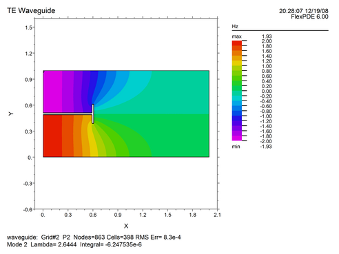
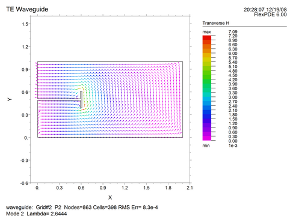
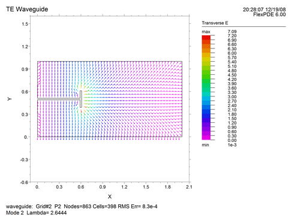
Page url: index.html?te_and_tm_modes.html